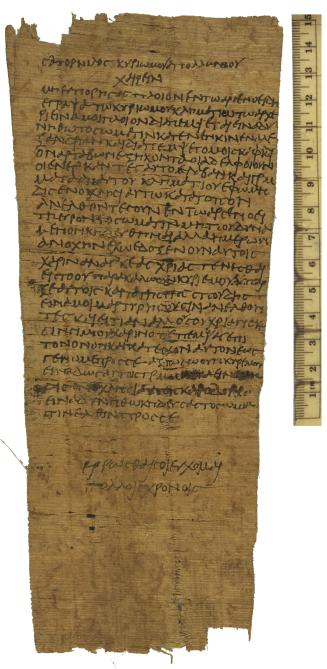

Letter from Satornilus.
AM 4104 (=P. Oxy. VII 1068), III c. AD

Also
available: a larger image (703k)
Background and Physical Properties
Publ./Side: Recto
Material: Papyrus
Items: 1
Size: 24.1 x 9.9 cm.
Lines: 29 lines
Negative: Transparency
Conservation Status:
Status: Published
--------------------------------------------
Contents
Date: III c. AD
Provenance: Oxyrhynchus, Oxyrhynchite nome, province of Egypt
Acquisition: AM 4104
Language: Greek
Genre: Documentary
Author: Satornilus
Type of Text/Title of Work: Letter
Content: Letter from Satornilus, with address on back.
--------------------------------------------
Information on Publications
First edition:
Series and volume:
Published: The Oxyrhynchus Papyri VII
Editor: B. P. Grenfell and A. S. Hunt
Year: 1911
Pg/Nr: 1068
Photo: